First released in 1969, it is known to this day as one of the most important operating systems in history.
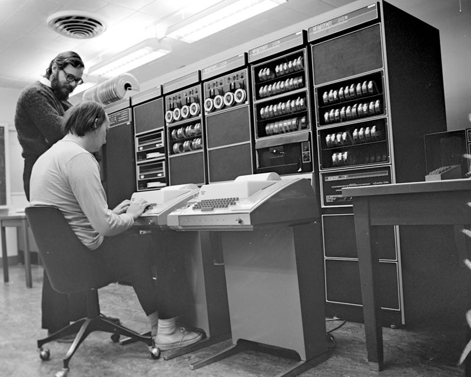
Operating systems aim to establish an abstraction layer between hardware and software, relieving the programmer of the burden of working directly with the specifics of the architecture of the computer in question. They make computers easier to operate, both for programmers and for users.
The UNIX operating system has interesting features implemented in a relatively simple way. In it, operation with multiple users and multiple simultaneous processes was successfully implemented. It also has a modular architecture, allowing software components to be added and removed dynamically in their entirety, eliminating the need to recompile the source code of the whole system every time a new module needs to be included. In addition, it can be adapted to different computers relatively easily, since it is programmed in the C language.
In its first releases, UNIX was an open-source project. It was studied, modified and rewritten by many groups of developers, who created a large family of UNIX-like operating systems. Most modern operating systems have, in some way, drunk from the UNIX fountain. It is worthwhile for anyone interested in information technology to know a little about the history of this old and revolutionary software project. Below, in this article, are some details about the historical context and the characteristics of UNIX.
The first operating systems were entirely written in assembly languages
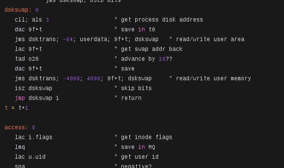
The first operating systems were usually developed using assembly languages (usually called by the name of the family of languages they belong to: “Assembly”). These programming languages are, basically, readable notations for the instructions of their respective computer architectures. In practice, an instruction consists of a combination of bits that, when placed in the control unit of the processor, induces a certain activity in the electronic circuit of the computer. Each computer architecture has its own instruction set and, therefore, its own assembly language.
When assembly languages are used to build very complex programs, their development demands too much time and effort from programmers. Moreover, there are a number of needs that they, alone, are not able to meet. One example of a need that assembly languages do not meet is portability. Each computer architecture has its own assembly language, with its own syntax. If, for example, there is a need to write a program that works on several different architectures, and the assembly languages of the respective architectures are used in its development, this program will have a unique source code for each of the architectures, and these codes will differ in syntax and logic. Another example of a shortcoming of assembly languages is related to their low level of abstraction, which makes it hard to interpret algorithms and to identify logic errors in more elaborate applications, due to the extreme complexity that the source code takes on as the program is developed.
CTSS and MULTICS, the two main ancestors of UNIX
Computers often need to meet the demand of several users using them simultaneously and running several tasks at the same time. What makes it possible for multiple users and multiple processes to run “simultaneously” on a single processor is a technique called time-sharing.
In time-sharing operating systems, the execution of instructions on the processor alternates between processes. In a situation where there are, for example, two processes running “at the same time” on the same processor, the time-sharing operating system keeps switching the execution of these two processes: it chooses a process to run and, after a few fractions of a second, interrupts the execution of this process to put another process into execution. This process switch is done periodically. It is triggered by a timer hardware (which is usually a functional block of the chipset) through an IRQ (interrupt request). When the IRQ is triggered by the timer, the processor interrupts the execution of the current program to run an operating system routine, which in this case is the process switching routine. This abrupt switching of processes through hardware interrupts is called preemption. Time-sharing operating systems have preemptive scheduling.
The first operating system to implement time-sharing was CTSS (Compatible Time-Sharing System), developed at MIT. CTSS was first demonstrated running on an IBM 7094 computer in 1961.
After the development of CTSS, MIT, together with Bell Labs and General Electric, tried to create a more ambitious operating system, which was named MULTICS (Multiplexed Information and Computing Service). This system aimed to run on a huge computer capable of supporting hundreds of connected users. The creators of the project were interested in creating an operating system capable of supporting computing utilities: companies specialized in distributing, in a shared way, the processing time of a single large computer to several remotely connected users.
The MULTICS project was relatively successful. Bell Labs and General Electric abandoned the project in its early phases but, with a lot of effort from the developers, MIT managed to make MULTICS succeed and commercialize it. Even so, this system did not meet the expectations of its developers because, even though it was very optimized, computers had little processing power for a very high demand.
The beginning of the development of UNIX
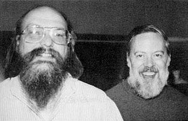
Some time later, the scientist Ken Thompson, from Bell Labs, who had worked on the development of MULTICS until the company abandoned the project, started writing a new operating system based on MULTICS, using a PDP-7 computer. This new system was simpler than the old MULTICS, and was named UNIX.
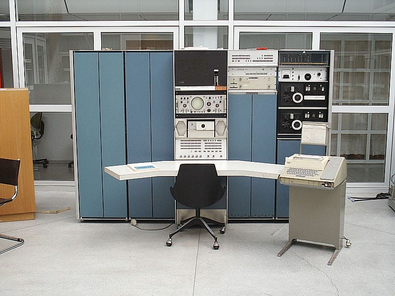

Ken Thompson's project aroused the interest of his co-worker Dennis Ritchie, who joined the development.
The creation of the C language and the rewriting of UNIX
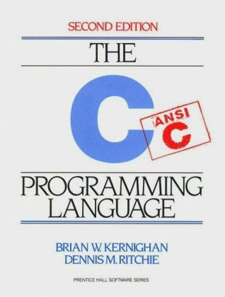
The source code of UNIX, until then written in assembly language, was rewritten too often because, in order not to become obsolete, it had to be constantly adapted to new models of PDP computers. To solve this problem, Ken Thompson rewrote UNIX in a programming language he had created himself, called B. This attempt to make the UNIX system portable was not successful because of the problems and limitations of the B language.
In a new attempt to make UNIX portable, Dennis Ritchie developed, based on the B language, a new programming language called C. It had improvements over its predecessor B.
Unlike an algorithm written in assembly language, an algorithm written in C does not require as much work to be adapted from one computer architecture to another, since the C language has no syntactic or logical variations for each architecture. In addition, the C language is, syntactically and structurally, much more abstract than assembly languages, making it easier to develop and interpret algorithms.
After the development of the first compiler for the C language, UNIX was largely rewritten from assembly language into C. From then on, UNIX became a portable system. It was possible to make it run on any computer system for which there was a C compiler, and this was one of the main factors that made UNIX a great revolution in the computing world.
The main characteristics of UNIX
Differences in organization between MULTICS and UNIX
One of the most notable differences between MULTICS and UNIX is the way they are organized. In MULTICS, the functionalities were separated into protection rings, which were basically layers, each one with a different level of privilege over the control of the hardware. Only the functionalities of ring 0 ran with full privilege. In all “upper” rings, the system functionalities ran with fewer privileges. The goal of this organization was to have as few functionalities as possible running in supervisor mode. The file system, for example, ran in ring 1 instead of ring 0.
UNIX, however, has a traditional monolithic organization. Most of the functionalities of the operating system, such as the file system and the device drivers, run “inside” the kernel itself, in privileged mode.
Multi-user operation
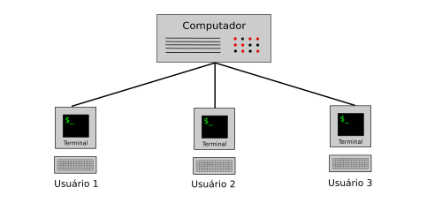
Like MULTICS, UNIX allows several users to use the same computer simultaneously, without the activity of one user interfering with that of another.
Simultaneous processing
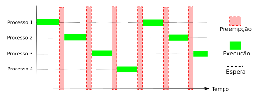
UNIX allows the user to run several tasks simultaneously, without having to interrupt one activity to start another.
Modular design
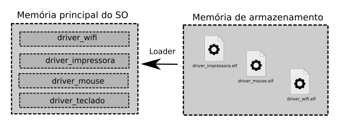
UNIX has a modular architecture. It is structured in a way that allows the user to adapt it to their needs by removing or adding components without compromising its operation. It is thanks to this that UNIX-like systems are used today in the most diverse applications, from simple embedded systems to large internet servers.
Portability
This is probably one of the most innovative characteristics of UNIX. The UNIX system can be adapted to the most diverse computer systems without much effort, thanks to the use of the C language.
Pipes
This feature of the UNIX system allows processes to exchange information through pipes. The read and write operations on pipes are performed using file descriptors and the read and write system calls.
Everything is a file
In UNIX, all input and output operations of the system are done using file descriptors and the read and write system calls, the same ones used to read and write information in files.
UNIX-like systems
In its first versions, the source code of UNIX was freely distributed, allowing several institutions to contribute to its development. However, after some years of development, UNIX became commercial and stopped being open-source. From then on, several free operating systems similar to UNIX were developed, which are called “UNIX-like systems”, such as BSD and the Linux-based systems.
BSD
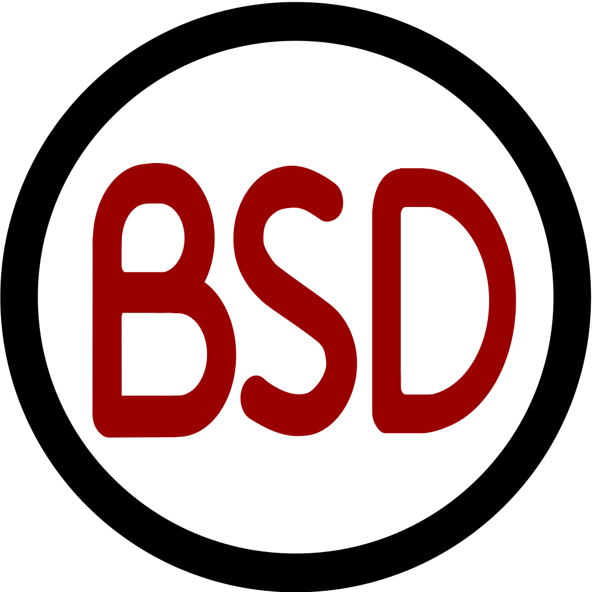
Back when Unix was still an open-source project, the source code of version 6 of the software was acquired by the University of California, Berkeley. With funding from ARPA (Advanced Research Projects Agency), of the United States Department of Defense, the BSD operating system (an acronym for Berkeley Software Distribution), based on the UNIX source code, was developed at the University of Berkeley. The binary code, as well as the source code of BSD, was freely distributed under the BSD license, a very permissive public license.
Today there are several variants of BSD, such as FreeBSD, OpenBSD and NetBSD. Apple's current operating systems, OS X (used on the desktops and notebooks sold by the company) and iOS (used on iPhones), are partially based on BSD.
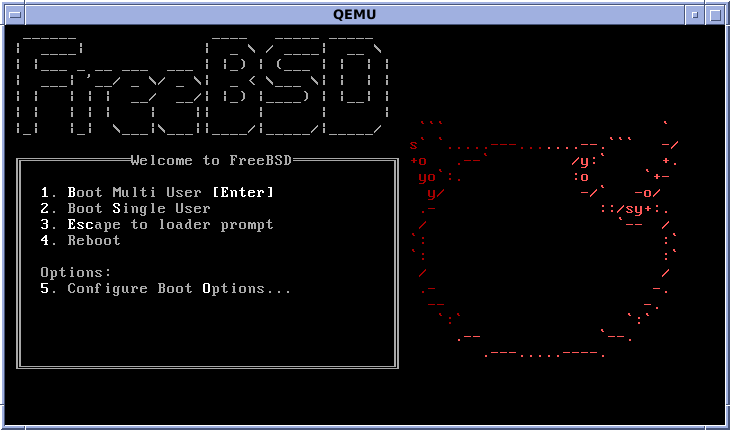
MINIX
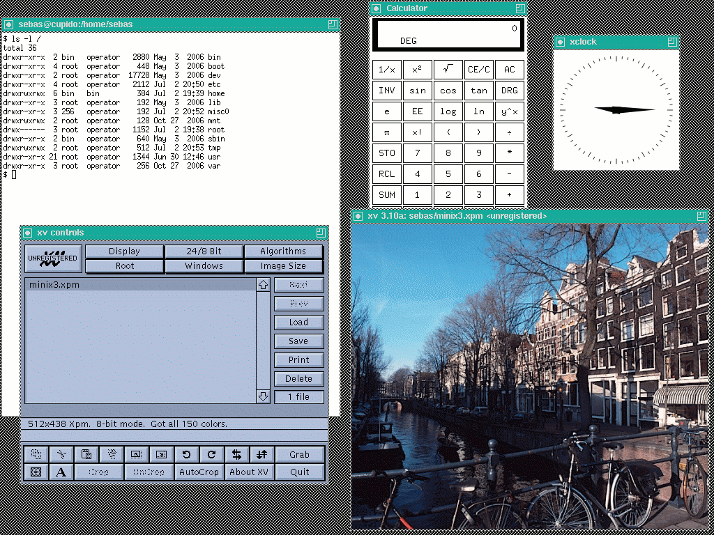
MINIX is a UNIX-like operating system. It was developed by professor Andrew S. Tanenbaum for educational purposes. The source code of the system is used as supporting material for the book “Operating Systems: Design and Implementation”, written by Andrew S. Tanenbaum himself. The name MINIX is an acronym for “Mini UNIX”. It is intended for personal computers, especially IBM PCs.
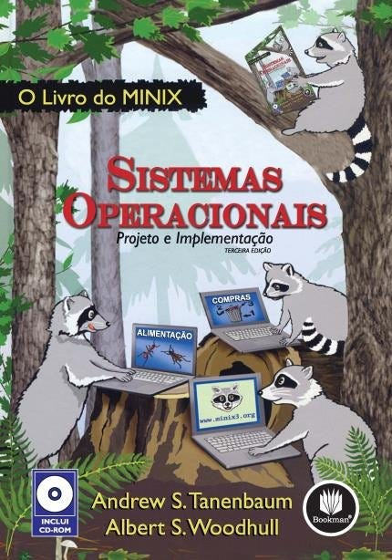
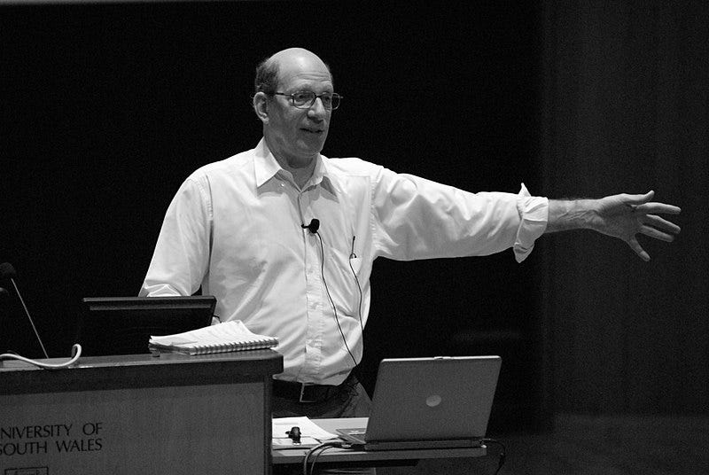
The source code of MINIX is relatively simple. It is classified as a microkernel system for having a reduced kernel, which serves only for the most basic activities, such as process scheduling and main memory management. All drivers and file systems are daemons, which run “above the kernel”, as user programs. In contrast to microkernel systems, there are monolithic kernel systems, in which drivers and file systems run as part of the kernel. Tanenbaum argues that microkernel systems are more robust and secure than monolithic kernel systems.
GNU/Linux
In 1989, the Finnish student Linus Torvalds decided to create his own operating system kernel based on MINIX: Linux. Initially, Linus had no intention of making Linux a big project. However, Linux aroused a lot of interest in the MINIX user community (especially those who were dissatisfied with Tanenbaum's resistance to improvements in MINIX), because Linus's project had no educational purposes and could be improved without concern for didactics.
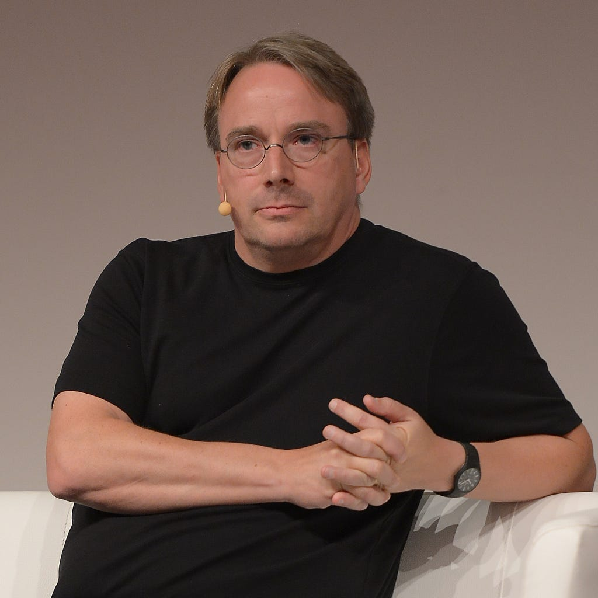
Tanenbaum often received requests from users over the internet for new features and improvements to be added to MINIX. In order to keep the source code of MINIX simple and easy to understand, Tanenbaum almost always refused the requests, which caused some dissatisfaction in the user community of his system.
Soon Linux started being developed by many people around the world, gaining many features and becoming a powerful piece of software. Later, the Linux kernel became part of Richard Stallman's GNU project, whose goal was to create a complete and totally free operating system, distributed under the GPL license (which, despite being a free software license, has its restrictions). The integration of the Linux kernel into the GNU project gave rise to the GNU/Linux operating system, which is the basis of a large family of operating systems. Among them are the Debian, Slackware, Arch, Red Hat, Ubuntu and Fedora distributions, among many others. Google's popular mobile operating system, Android, is also based on the Linux kernel.
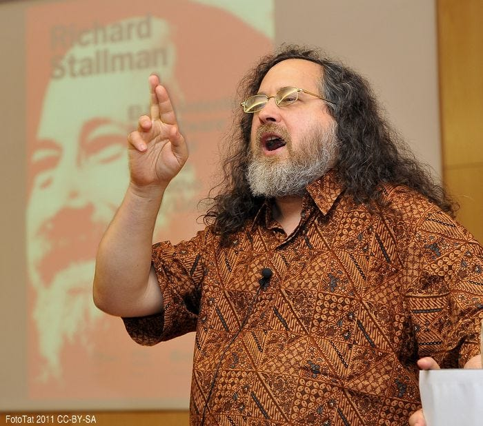
In contrast to MINIX, Linux-based operating systems are classified as monolithic kernel systems, since a significant part of their features is concentrated in the Linux kernel.
References
TANENBAUM, Andrew S. Sistemas Operacionais Modernos (Modern Operating Systems). 3rd Edition. São Paulo: PEARSON, November 2010.
L. STUART, Brian. Princípios de Sistemas Operacionais: Projetos e Aplicações (Operating Systems: Principles, Design, and Applications). Translation: All Tasks. São Paulo: Cengage Learning, 2011. ISBN 978–85–221–0733–9.
THOMAS, Rebeca; YETES, Jean. UNIX TOTAL. São Paulo: McGraw-Hill, 1989.
GROFF, James R.; WEINBERG, Paul N. Sistema Operacional Unix: Um guia conceitual (Understanding UNIX: A Conceptual Guide). São Paulo: EBRAS, 1986.